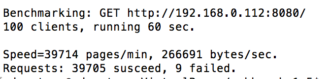
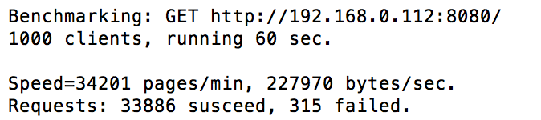
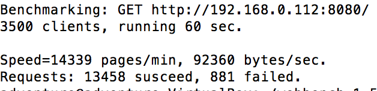
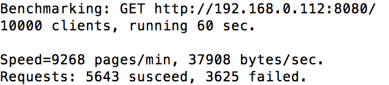
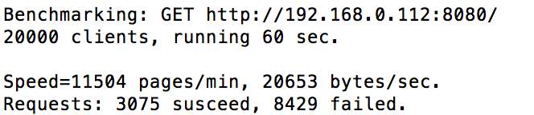
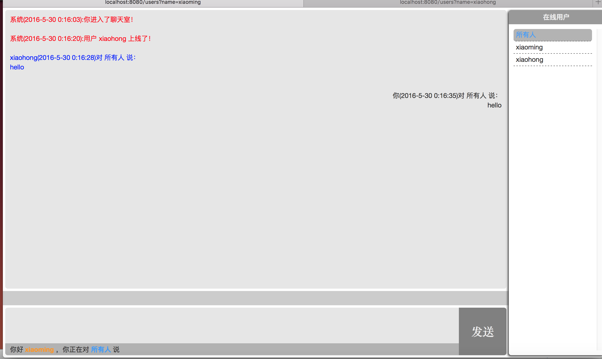
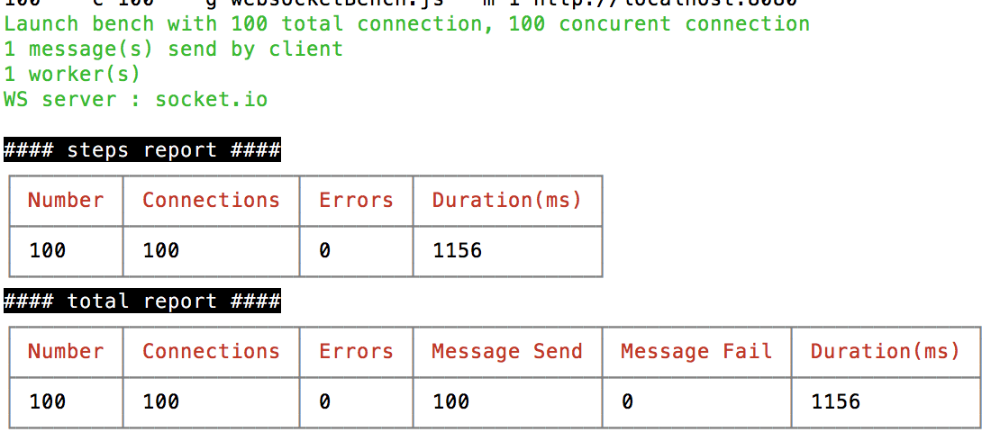
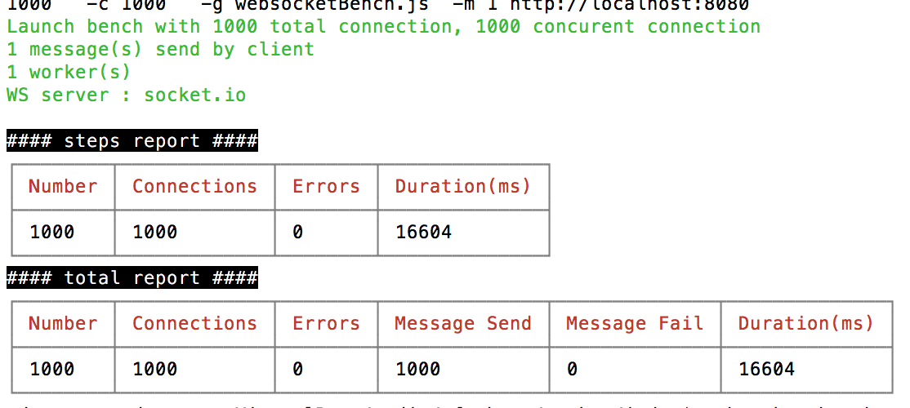
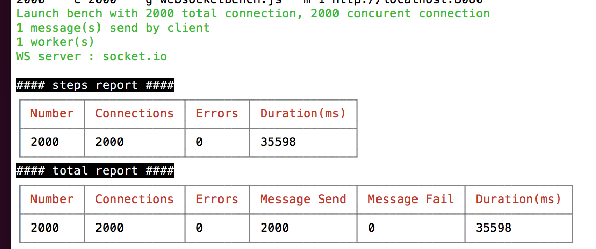

本文主要介绍两款网站压力测试工具，webbench和websocket bench，并且测试单机nodejs和socket.io的性能。webbench作为一款有名的网站压力测试工具，其主要特点是使用简单，功能较为丰富。其主要测试内容为每秒钟的请求数和每秒钟传输数据量。webbench不仅具有测试静态页面的能力，也能对动态页面进行测试，本文采用webbench测试单机nodejs的性能。websocket bench是一款能够用来测试websocket服务性能的工具，暂时支持Socket.IO，Engine.IO，Faye，Primus，WAMP等框架的测试。Socket.io作为一个实现websocket协议的nodejs框架，因为实现了服务器和浏览器的常连接，因此测试较为困难，本位采用websocket bench对其进行性能测试。
一：webbench的安装
webbench的安装需要依赖ctags,因此在安装webbench之前需要先安装ctags。
|
|
安装好ctags之后，下载安装包并解压编译
|
|
二：webbench的使用
webbench使用非常简单，可以输入help查看命令。
常用参数说明，-c表示客户端数量，-t表示时间。
三：Linux文件句柄数量受限制
默认情况下，linux用户能够打开的文件句柄数为1024,可以通过ulimit命令进行查看。
也就是说在默认情况下，基于Linux的通讯最多允许同时1024个tcp并发连接。想要获得更高的tcp并发连接数，就必须修改Linux对用户进程可同时打开的文件数量的软限制和硬限制。其中
- 软限制是指linxu在当前系统能够承受的范围内进一步限制用户同时打开文件的数量
硬限制是指根据系统硬件资源状况计算出来的系统最多能够同时打开的文件数量。
修改单一进程能够同时打开文件句柄数主要有两种方法：1,直接使用ulimit命令
1ulimit -n 4096
但是该方法设置的值只能在当前终端生效，并且设置的值不能高于硬连接数。
- 2,修改/etc/security/limits.conf文件，添加或者修改12* soft nofile 1048576* hard nofile 1048576
其中*表示对所有用户有效，soft表示软限制，hard表示硬限制，超过这个阈值，将会报错。nofile表示文件打开的最大数量。1028576是每个进程打开的文件句柄数，超过这个数需要重新编译Linux内核。
四：webbench测试结果
本文采用express框架实现了一个简单的nodejs项目，并采用webbench测试其主页性能。本文测试环境为：ubutun 14.04，4G内存，酷睿双核，内网环境下。
以下分别为100，1000，3500，10000和20000客户端下的性能。





从以上测试结果来看，在单机情况下，当客户端连接数量在3500时，服务较为稳定，当客户端连接数达到10000时，服务开始变的不稳定，当连接数达到20000时，服务基本不可用。在实验过程中发现，当连接数达到几K时，服务的cup直线飙升达到90%以上，但是内存相对变化不是很大。
五：websocket bench安装
直接使用以下命令安装：
六：websocket bench的使用
|
|
常用参数说明-a表示总的连接数，-c表示每秒并发连接数，-g可以指定特定的generate文件，-m 表示每个客户端的消息个数。
其中的websocketBench.js格式如下：
七：测试结果
本文采用socket.io实现了一个简单的聊天室，每一个登录的人可以对所有的人说话。测试环境为：ubutun 14.04，4G内存，单核，服务和测试工具都运行在同一台vitualbox虚拟机中。




经过多次测试得知，在广播的情况下，服务端最多能够接受1000个左右的连接，未广播的情况下，服务端大概能接受2000个左右的连接。上述数据只在特定的情况下测试，仅供参考。